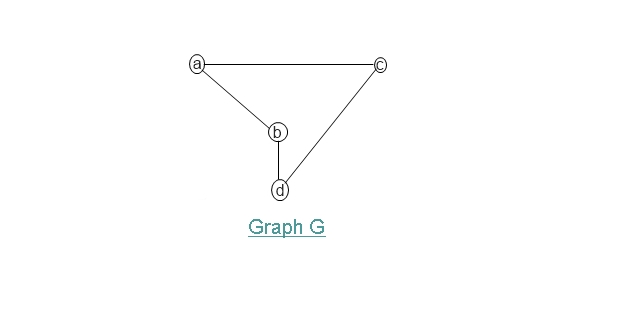
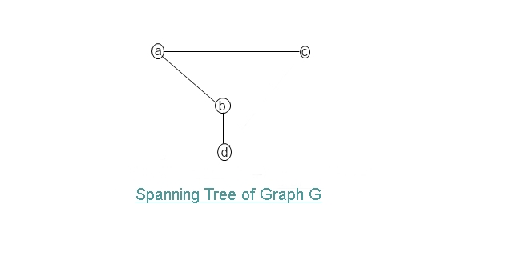
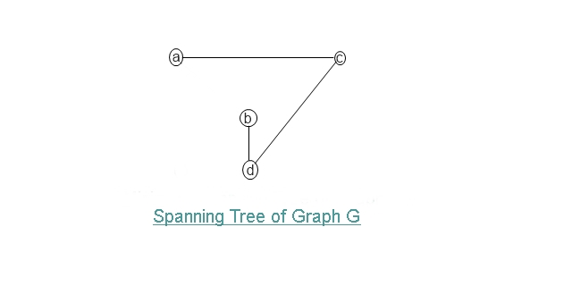
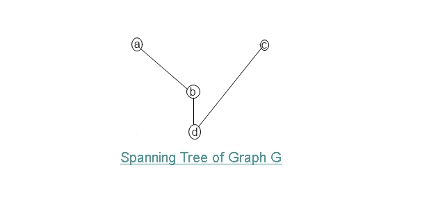

Spanning TreeA Spanning Tree of a connected graph G is a Tree that includes all the vertices of G . A Graph can have many Spanning Tree's.
Example:




Minimum Spanning TreeA minimum spanning tree of an undirected graph G is a tree that connects all the vertices of G at lowest total cost. A minimum spanning
tree exists if and only if G is connected.To Find Minimum Spanning Tree,there are many algorithms like Prim's Algorithm,Dijkstra's Algorithm e.t.c.